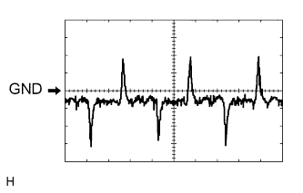
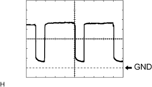

СИСТЕМА КОНДИЦИОНИРОВАНИЯ (для моделей с автоматическим кондиционером) > КОНТАКТЫ ЭБУ |
| ПРОВЕРЬТЕ БЛОК УПРАВЛЕНИЯ СИСТЕМОЙ КОНДИЦИОНИРОВАНИЯ |
Отсоедините разъемы G24 и G25 усилителя.
Измерьте напряжение и сопротивление в соответствии со значениями, приведенными в таблице.
| Номера контактов (обозначения) | Цвет проводки | Описание контактов | Условие | Заданные условия |
| G25-21 (B) - G25-14 (GND) | V - W-B | Аккумуляторная батарея | Всегда | 11 – 14 В |
| G25-1 (IG+) - G25-14 (GND) | L - W-B | Питание зажигания | Зажигание включено | 11-14 В |
| Зажигание выключено | Менее 1 В | |||
| G25-14 (GND) - масса | W-B - масса | Масса главного источника питания | Всегда | Менее 1 Ом |
| G24-20 (RGND) - масса*1 | W-B - масса | Масса главного источника питания | Всегда | Менее 1 Ом |
| G24-24 (+B2) - G24-20 (RGND)*1 | GR - W-B | Аккумуляторная батарея | Всегда | 11-14 В |
Подсоедините разъемы G24 и G25 усилителя.
Измерьте напряжение и сопротивление в соответствии со значениями, приведенными в таблице.
| Номера контактов (обозначения) | Цвет проводки | Описание контактов | Условие | Заданные условия |
| G25-3 (PTC1) - масса*2 | V - масса | Сигнал управления реле PTC № 1 |
| 11 - 14 В*10 |
| G25-4 (PTC3) - масса*2 | P - масса | Сигнал управления реле PTC № 3 |
| 11 - 14 В*10 |
| G25-5 (TAM) - G25-13 (SG-2) | V - G | Сигнал термистора кондиционера (датчика температуры окружающего воздуха) |
| 1,35 - 1,75 В |
| G25-5 (TAM) - G25-13 (SG-2) | V - G | Сигнал термистора кондиционера (датчика температуры окружающего воздуха) |
| 0,9 - 1,2 В |
| G25-8 (LOCK) - G25-13 (SG-2) | R - G | Сигнал датчика блокировки компрессора системы кондиционирования |
| Импульсы формируются (см. осциллограмму 1) |
| G25-9 (PRE) - G25-13 (SG-2)*3 | G - G | Сигнал датчика давления системы кондиционирования |
| 0,63 - 4,72 В |
| G25-9 (PRE) - G25-13 (SG-2)*3 | G - G | Сигнал датчика давления системы кондиционирования |
| Менее 0,63 В |
| G25-9 (PRE) - G25-13 (SG-2)*3 | G - G | Сигнал датчика давления системы кондиционирования |
| 4,72 В или выше |
| G25-9 (PRE) - масса*4 | G - масса | Сигнал контактного датчика давления № 1 |
| Менее 1 В |
| G25-9 (PRE) - масса*4 | G - масса | Сигнал контактного датчика давления № 1 |
| 4,69 В или более |
| G25-10 (S5-3) - G25-13 (SG-2) | B-G | Питание датчика давления системы кондиционирования | Зажигание включено | 4,75 - 5,25 В |
| G25-15 (COOL) - G25-14 (GND)*5 | V - W-B | Сигнал работы холодильной камеры |
| Менее 1 В |
| G25-16 (MG+) - G25-14 (GND)*6 | V - W-B | Сигнал управления вязкостного подогревателя с электромагнитный муфтой |
| Менее 1 В |
| G25-17 (AC1) - G25-14 (GND) | LG - W-B | Сигнал управления компрессором |
| Менее 1 В |
| G25-18 (MHTR) - G25-14 (GND) | G - W-B | Сигнал реле MIR HTR |
| Менее 1 В |
| G25-20 (MGC) - G25-14 (GND) | R - W-B | Сигнал работы электромагнитной муфты |
| Менее 1 В |
| G25-22 (PTC2) - масса*2 | LG - масса | Сигнал управления реле PTC № 2 |
| 11 - 14 В*10 |
| G25-23 (BLW) - G25-14 (GND) | L - W-B | Сигнал управления вентилятором с электродвигателем в сборе |
| Формирование импульсов: (см. осциллограмму 2) |
| G25-25 (ALT) - G25-14 (GND)*2 | L - W-B | Сигнал генератора (управление подогревателем PTC) | Двигатель запущен | Формирование импульсов |
| G25-27 (ACT) - G25-14 (GND) | R - W-B | Сигнал управления компрессором |
| 4,75 - 5,25 В |
| G25-29 (TR) - G25-34 (SG-1) | GR - P | Сигнал термистора системы кондиционирования (датчика температуры в салоне) |
| 1,8 - 2,2 В |
| 1,2 - 1,6 В | |||
| G25-32 (TSP) - G25-14 (GND) | V - W-B*8 G - W-B*9 | Сигнал источника питания датчика автоматического управления освещением (датчика солнечной радиации) (со стороны переднего пассажира) |
| 0,8 - 4,3 В |
| Менее 0,8 В | |||
| G25-33 (TSD) - G25-14 (GND) | G - W-B*8 V - W-B*9 | Сигнал источника питания датчика автоматического управления освещением (датчика солнечной радиации) (со стороны водителя) |
| 0,8 - 4,3 В |
| Менее 0,8 В | |||
| G25-36 (SWVC) - G25-14 (GND)*6, *7 | W - W-B |
|
| Менее 1 В |
| G24-1 (RBUS) - G24-21 (RBUG)*1 | LG - L | Сигнал управления IC шины (в задней части) | Зажигание включено | Формирование импульсов |
| G24-4 (TEC) - G24-19 (SGND)*1 | SB - V | Сигнал датчика температуры заднего испарителя |
| 2,0 - 2,4 В |
| 1,4 - 1,8 В | |||
| G24-7 (SG-6) - масса*1 | R - масса | Масса термистора системы кондиционирования (датчика температуры в задней части салона) | Всегда | Менее 1 В |
| G24-12 (SWCB) - G25-14 (GND)*5 | LG - W-B | Сигнал работы холодильной камеры |
| Менее 1 В |
| G24-17 (TR) - G24-7 (SG-6)*1 | B - R | Сигнал термистора системы кондиционирования (датчика температуры в задней части салона) |
| 1,8 - 2,2 В |
| 1,2 - 1,6 В | |||
| G24-19 (SGND) - масса*1 | V - масса | Масса датчика температуры заднего испарителя | Всегда | Менее 1 В |
| G24-20 (RGND) - масса*1 | W-B - масса | Масса источника питания | Всегда | Менее 1 В |
| G24-22 (BLWH) - G24-20 (RGND)*1 | W - W-B | Сигнал управления задним вентилятором с электродвигателем в сборе |
| Формирование импульсов: (см. осциллограмму 2) |
| G24-23 (RBBU) - G24-21 (RBUG)*1 | P-L | Питание IC шины (в задней части) | Всегда | 11 – 14 В |
| z1-2 (BUS G) - масса | - | Масса ИС шины | Всегда | Менее 1 В |
| z1-3 (BUS) - z1-2 (BUS G) | - | Сигнал управления ИС шины | Зажигание включено | Формирование импульсов |
| z1-4 (B BUS) - z1-2 (BUS G) | - | Источник питания ИС шины | Всегда | 11 – 14 В |
| z1-6 (TEA) - z1-5 (SGA) | - | Сигнал термистора системы кондиционирования № 1 |
| 1,7 - 2,1 В |
| 0,9-1,3 В |
|  |
С помощью осциллографа проверьте форму сигнала 1.
| Позиция | Описание |
| Номера контактов (обозначения) | G25-8 (LOCK) - G25-13 (SG-2) |
| Настройки прибора | 200 мВ/дел., 10 мс/ дел. |
| Условие |
|
|  |
С помощью осциллографа проверьте форму сигнала 2.
| Позиция | Описание |
| Номера контактов (обозначения) |
|
| Настройки прибора | 1 В/дел., 500 мкс/дел. |
| Условие |
|
| ПРОВЕРЬТЕ БЛОК УПРАВЛЕНИЯ СИСТЕМОЙ КОНДИЦИОНИРОВАНИЯ (ДЛЯ ХОЛОДИЛЬНОЙ КАМЕРЫ) (для моделей с холодильной камерой) |
Отсоедините разъем блока управления системой кондиционирования (для холодильной камеры).
Измерьте сопротивление и напряжение в соответствии со значениями, приведенными в таблице.
| Номера контактов (обозначения) | Цвет проводки | Описание контактов | Условие | Заданные условия |
| 1 (+B) - 4 (GND) | W-R - W-B | Аккумуляторная батарея | Всегда | 11 – 14 В |
| 2 (IG+) - 4 (GND) | GR - W-B | Источник питания IG | Зажигание включено | 11-14 В |
Подсоедините разъем блока управления системой кондиционирования (для холодильной камеры).
Измерьте сопротивление и напряжение в соответствии со значениями, приведенными в таблице.
| Номера контактов (обозначения) | Цвет проводки | Описание контактов | Условие | Заданные условия |
| 5 (SW) - 4 (GND) | LG-R - W-B | Сигнал выключателя управления кондиционером |
| Менее 1 В |
| 6 (CBI) - 4 (GND) | L-G - W-B | Сигнал разрешения компрессора системы кондиционирования |
| Менее 1 В |
| 7 (LED) - 4 (GND) | L-B - W-B | Сигнал индикатора холодильной камеры |
| Менее 1 В |
| 8 (CBT) - 4 (GND) | BR-Y - W-B | Сигнал запроса блока управления системой кондиционирования |
| Менее 1 В |
| 9 (BLW) - 4 (GND) | W - W-B | Сигнал работы электродвигателя вентилятора кондиционера № 1 |
| Менее 1 В |
| 10 (SG) - 4 (GND) | W-L - W-B | Масса | Всегда | Менее 1 Ом |
| ПРОВЕРЬТЕ ИНТЕГРИРОВАННУЮ ПАНЕЛЬ УПРАВЛЕНИЯ В СБОРЕ |
Отсоедините разъем панели G23.
Измерьте сопротивление и напряжение в соответствии со значениями, приведенными в таблице.
| Номера контактов (обозначения) | Цвет проводки | Описание контактов | Условие | Заданные условия |
| G23-1 (+B) - G23-4 (GND) | L - W-B | Аккумуляторная батарея | Всегда | 11 – 14 В |
| G23-5 (IG) - G23-4 (GND) | L - W-B | Источник питания IG | Зажигание включено | 11-14 В |
| G23-6 (ACC) - G23-4 (GND) | P - W-B | Источник питания ACC | Замок зажигания в положении ACC | 11-14 В |
| G23-4 (GND) - масса | W-B - масса | Масса | Всегда | Менее 1 Ом |
| ПРОВЕРЬТЕ ПАНЕЛЬ УПРАВЛЕНИЯ СИСТЕМЫ КОНДИЦИОНИРОВАНИЯ В СБОРЕ (для моделей с задней системой кондиционирования) |
Отсоедините разъем T3 системы управления.
Измерьте сопротивление и напряжение в соответствии со значениями, приведенными в таблице.
| Номера контактов (обозначения) | Цвет проводки | Описание контактов | Условие | Заданные условия |
| T3-5 (IG) - T3-8 (E) | L - W-B | Источник питания IG | Зажигание включено | 11-14 В |
| T3-8 (E) - масса | W-B - масса | Масса | Всегда | Менее 1 Ом |
| ПРОВЕРЬТЕ РАСПРЕДЕЛИТЕЛЬНЫЙ БЛОК СО СТОРОНЫ ВОДИТЕЛЯ И ГЛАВНЫЙ ЭБУ КУЗОВА (БОРТОВОЙ ЭБУ СЕТИ МУЛЬТИПЛЕКСНОЙ СВЯЗИ) |
Снимите главный ЭБУ кузова (Нажмите здесь).
Измерьте напряжение и сопротивление в соответствии со значениями, приведенными в таблице.
| Номера контактов (обозначения) | Цвет проводки | Описание контактов | Условие | Заданные условия |
| A-11 (GND1) - масса | - | Масса | Всегда | Менее 1 Ом |
| A-29 (ACC) - масса | - | Источник питания ACC | Замок зажигания в положении ACC | 11-14 В |
| A-31 (ALTB) - масса | - | Питание аккумуляторной батареи | Всегда | 11 – 14 В |
| A-32 (IG) - масса | - | Питание замка зажигания | Зажигание включено | 11-14 В |
Установите главный ЭБУ кузова (Нажмите здесь).
Измерьте напряжение в соответствии со значениями, приведенными в таблице.
| Номера контактов (обозначения) | Цвет проводки | Описание контактов | Условие | Заданные условия |
| G64-20 (CLTB) - масса | P - масса | Выход питания датчика автоматического управления освещением | Зажигание выключено | менее 1 В |
| Зажигание включено | 11-14 В | |||
| G64-22 (CLTE) - масса | L - масса | Масса датчика автоматического управления освещением | Всегда | Менее 1 Ом |